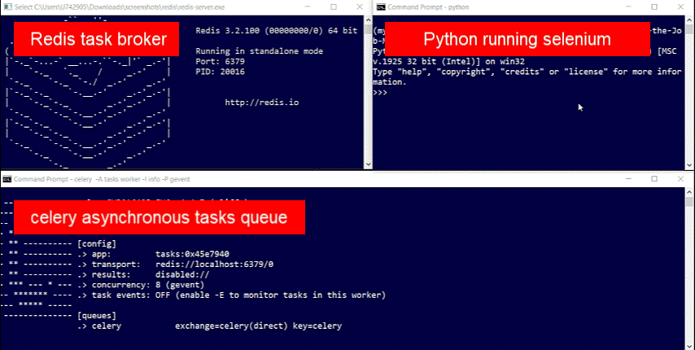

Asynchronous Selenium Tasking
Intro
Running time-consuming tasks asynchronously means running them at the same time in parallel. Long-time processing tasks being exeuted at once save a lot of time as opposed to launching them one by one (next starts once previous finishes).
Features
App includes following features:
Demo
Workflow:
- Running Task broker - Redis.
- Running Celery server in terminal.
- celery server is on stand-by listening to python
- Running Python in terminal.
- importing main function we want to run several times asynchronously,
- defining phrases in the p_list - list length equals times main function will being executed asynchronously,
- sending function to celery task queue by executing .delay() on function name. - Celery executes tasks in parallel.
Setup
Python libraries installation required
- pip install celery
- pip install selenium
- pip install pandas
Redis software installation required.